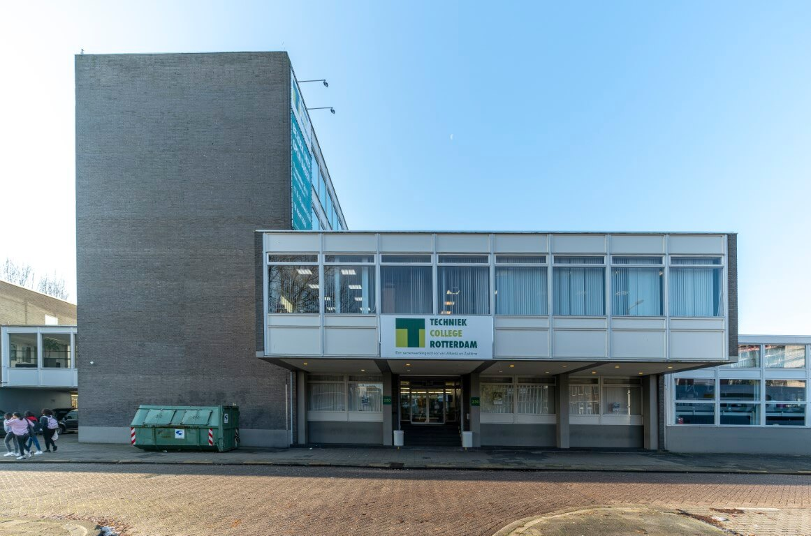

onze school Techniek college is dicht bij zuidplein en kan je vinden achter de Ikazia ziekenhuis. Je kan op het techniek college rotterdam een mbo opleiding volgen in de ict, lab en research en bouwkunde. deze school is op een hele goeie locatie en is heel makkelijk om te bereiken speciaal omdat het dichtbij zuidplein is dus openbaarvervoer is geen probleem. Met de fiets gaan is ook geen probleem en ook heel makkelijk dus reisen zal vast geen probleem zijn.
